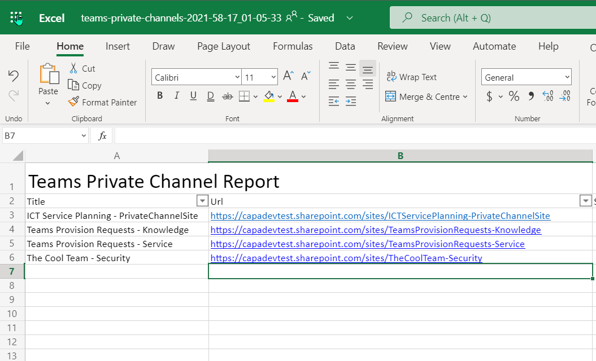

Report of Private Teams channels to Excel
Summary
This sample gathers all of the teams private channels in your tenant and produces an Excel file which is then uploaded to a SharePoint Site. Two connections are used, one for the Admin Centre and the other to upload the file to the "Documents" location in the root site.

Note
For this sample, you will require the Excel PowerShell module to be installed
Write-Host "Running Script..."
# Connect to the standard SharePoint Site
$siteConn = Connect-PnPOnline -Url "https://contoso.sharepoint.com" -Interactive -ReturnConnection
# Connect to the SharePoint Online Admin Service
$adminSiteConn = Connect-PnPOnline -Url "https://contoso-admin.sharepoint.com" -Interactive -ReturnConnection
# SharePointy Adminy Stuff here
Write-Host "Connected to SharePoint Online Admin Centre"
#-----------------
# Gather Reporting Data
#-----------------
# Gets all Team Private Channels based on the template
$teamPrivateChannels = Get-PnPTenantSite -Template "TEAMCHANNEL#0" -Connection $adminSiteConn
#-----------------
# Produce and Save Reporting Data
#-----------------
$now = [System.DateTime]::Now.ToString("yyyy-mm-dd_hh-MM-ss")
$reportFileName = "teams-private-channels-$($now).xlsx"
$ExcelReportSettings = @{
Path = $reportFileName
Title = "Teams Private Channel Report"
WorksheetName = "Teams Private Channels"
AutoFilter = $true
AutoSize = $true
}
Write-Host "Creating Excel File $reportFileName"
$teamPrivateChannels | Select-Object Title, Url, StorageUsage, Owner, SiteDefinedSharingCapability `
| Export-Excel @ExcelReportSettings
# Save to SharePoint
$file = Add-PnPFile -Path $reportFileName -Folder "Shared Documents" -Connection $siteConn
Write-Host "Uploaded Excel File to SharePoint"
Check out the PnP PowerShell to learn more at: https://aka.ms/pnp/powershell
Source Credit
Sample first appeared on Azure Automation to the Rescue – Session at Scottish Summit 2021 | CaPa Creative Ltd
Contributors
| Author(s) |
|---|
| Paul Bullock |
| Adam Wójcik |
Disclaimer
THESE SAMPLES ARE PROVIDED AS IS WITHOUT WARRANTY OF ANY KIND, EITHER EXPRESS OR IMPLIED, INCLUDING ANY IMPLIED WARRANTIES OF FITNESS FOR A PARTICULAR PURPOSE, MERCHANTABILITY, OR NON-INFRINGEMENT.